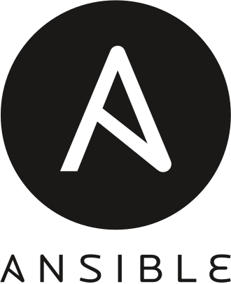
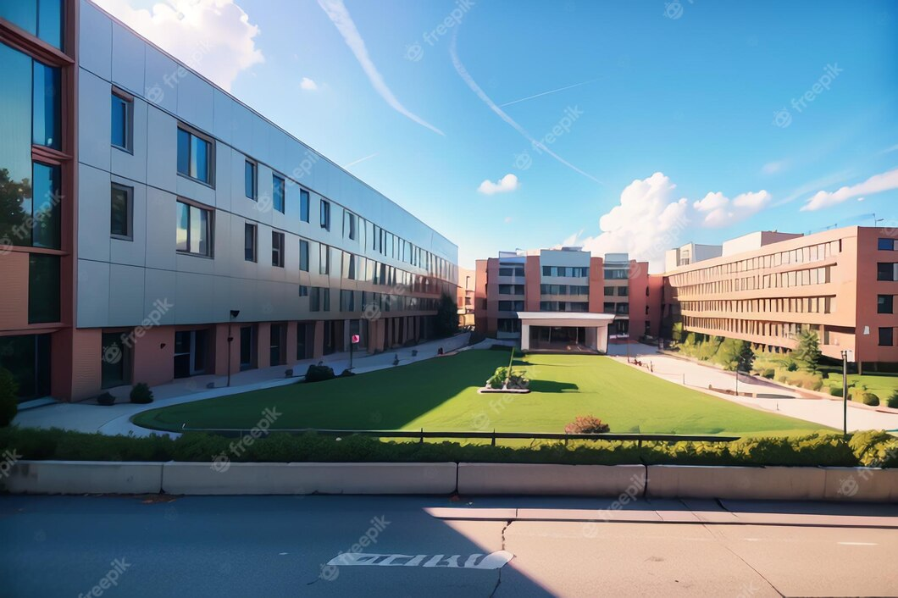

MY SRE & DevOps Skills




Hello,
I'm Javedbasha Shaik,
I’m a Site Reliability Engineer with 2+ years of experience designing scalable cloud infrastructure and CI/CD pipelines that improve deployment speed, reduce failures, and ensure high availability.
I’ve worked on automating multi-environment deployments using GitHub Actions and Jenkins, managing AWS infrastructure with Terraform, and supporting containerized workloads on Kubernetes (EKS).
My focus is simple:
→ Reduce manual work through automation
→ Improve system reliability and uptime
→ Enable faster, safer releases
I’ve hands-on experience with:
• CI/CD: GitHub Actions, Jenkins
• Cloud: AWS (EKS, ECS, S3, RDS, CloudWatch)
• IaC: Terraform
• Configuration: Ansible
• Containers: Docker, Kubernetes, Helm
• Scripting: Bash, PowerShell
I also work on monitoring, logging, and incident handling to ensure systems remain stable under real-world load.
Currently looking for opportunities as a DevOps / SRE Engineer where I can contribute to building scalable and resilient systems.
📩 Let’s connect if you’re hiring or working on interesting DevOps challenges
"I Completed my Tenth (SSC/Tenth Standard) in Jaya Usha English Medium High School with the Percentage: 90.25% and CGPA: 9.5/10.0 "
"I Completed my Intermediate (12th Class/Higher Secondary) in Sree Chaitanya Junior College with the Percentage: 95% and CGPA: 9.88/10.0 "

"I Completed my Graduation in Bachelor of Technology (B.Tech) in PBR VITS affliated by JNTU Anantapur with the Percentage: 78.05% and CGPA: 7.87/10.0 "
"I am a Site Reliability Engineer at Tech Mahindra, specializing in CI/CD pipeline management using GitHub Actions and Jenkins. I manage scalable cloud infrastructure on Amazon Web Services using Terraform, focusing on automation, reliability, deployment efficiency, and modern DevOps practices."
